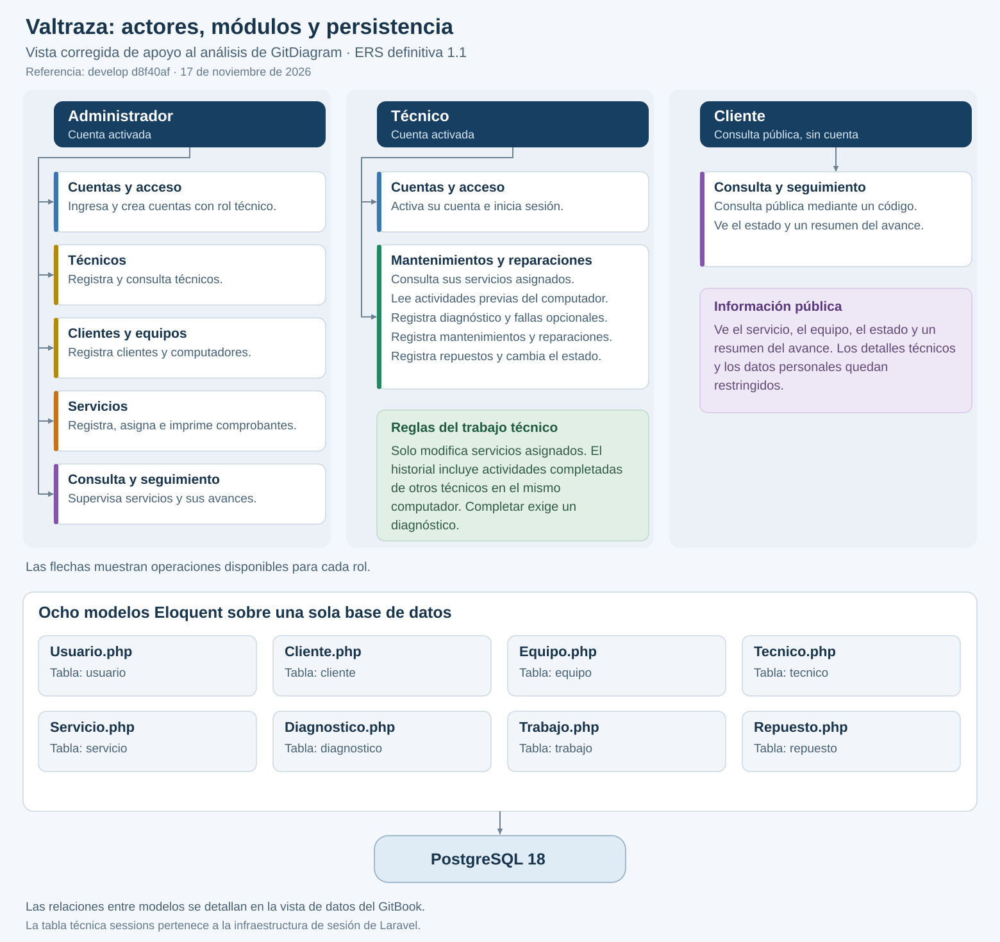

Análisis de GitDiagram
Diagrama público regenerado
Diagrama interactivo · Exportación Markdown del generador
Se regeneró y comprobó el grafo público el 18 de noviembre de 2026. GitDiagram utiliza el árbol, el README y una muestra del código de main; su salida no identifica el commit exacto que leyó. Esta revisión se contrastó con la ERS 1.1 y el código versionado en f84daea, que conserva la implementación funcional del cierre del ciclo 3.
El grafo automático puede agrupar responsabilidades u omitir controladores que no entraron en su muestra. Esa agrupación no cambia los seis módulos del diseño. Para interpretar sus cajas y flechas, se utiliza la siguiente correspondencia comprobada en el código.
Responsabilidades y relaciones verificadas
| Aspecto del grafo | Referencia de Valtraza |
|---|---|
| Recepción y asignación | Clientes y equipos registra las personas y computadores; Servicios registra la atención y consulta Técnicos para asignar un encargado. Técnicos es un módulo propio. |
| Creación de cuentas | CuentasController coordina la operación y Acceso crea una cuenta con rol fijo de técnico. RegistroTecnicos registra personas; no crea cuentas. Administrador y técnico ingresan por el mismo formulario. |
| Historial del computador | La ficha administrativa utiliza FichaClienteController y HistorialEquipos. Desde un servicio asignado, el técnico lee las actividades anteriores completadas del mismo computador, incluso de otro técnico. No puede abrir ni operar directamente un servicio ajeno. |
| Trabajo técnico y estados | RegistroTrabajoTecnico registra diagnósticos, trabajos y repuestos en modelos distintos y aplica las clases de estado. Completar exige diagnóstico y no exige una reparación. La regla pertenece a Mantenimientos y reparaciones. |
| Consulta y seguimiento | ConsultaPublica usa GestionServicios y LecturaAvance; obtiene el computador a través de Servicios y expone un resumen sin datos personales ni detalles técnicos. SupervisionServicios proporciona la lectura administrativa completa. |
| Persistencia | Hay ocho modelos de negocio en PostgreSQL. Trabajo.tipo distingue mantenimiento de reparación. El cliente se obtiene por Servicio → Equipo → Cliente. sessions es infraestructura de sesión. |
La flecha de dependencia va del consumidor al proveedor. Las seis dependencias directas entre servicios de módulos son Cuentas y acceso → Técnicos; Servicios → Clientes y equipos y Técnicos; Mantenimientos y reparaciones → Servicios; Consulta y seguimiento → Servicios y Mantenimientos y reparaciones. El filtro administrativo de técnicos y la ficha con historial se componen desde controladores. Una flecha de relación Eloquent representa una asociación de datos y no debe confundirse con una llamada entre módulos.
La concordancia de requisitos y diseño identifica RF01–RF14 y las revisiones de los Talleres 1 y 2. El README del repositorio publica también el mapa de módulos y sus ubicaciones para facilitar el análisis automático. La vista siguiente es la referencia documental revisada; se distingue del resultado generado por GitDiagram.
Vista de referencia del GitBook

Descargar PNG · Abrir SVG · Fuente Mermaid


| Módulo | Responsabilidad |
|---|---|
| Clientes y equipos | Registro de clientes y computadores, y consulta de la ficha e historial desde administración. |
| Técnicos | Registro administrativo de técnicos, consultado para asignaciones y cuentas. |
| Cuentas y acceso | Ingreso y activación, creación de cuentas de técnicos por el administrador. |
| Servicios | Registro, códigos, asignación, reasignación y comprobante. |
| Mantenimientos y reparaciones | Servicios asignados, historial de actividades completadas del computador en solo lectura, diagnósticos, trabajos, repuestos y estado. |
| Consulta y seguimiento | Supervisión administrativa y consulta del cliente por código sin cuenta. |
El diagrama de módulos y dependencias muestra el monolito Laravel 12 y PHP 8.3. El diagrama de actores representa el acceso por rol. Los ocho modelos de negocio persisten en PostgreSQL. sessions es una tabla técnica de Laravel. Consulta el modelo de datos para ver claves y relaciones.